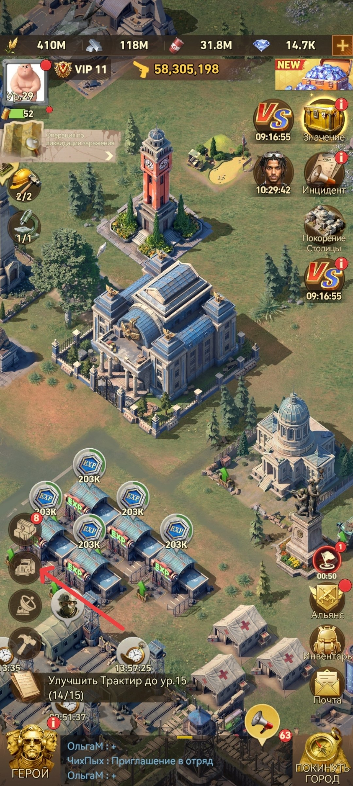
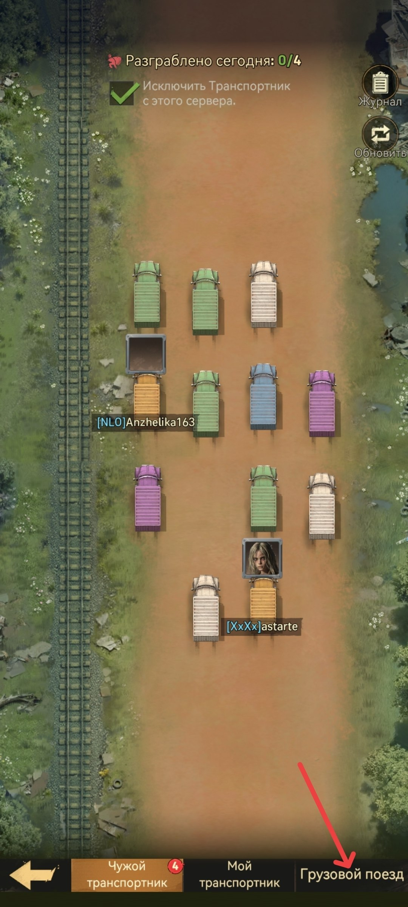
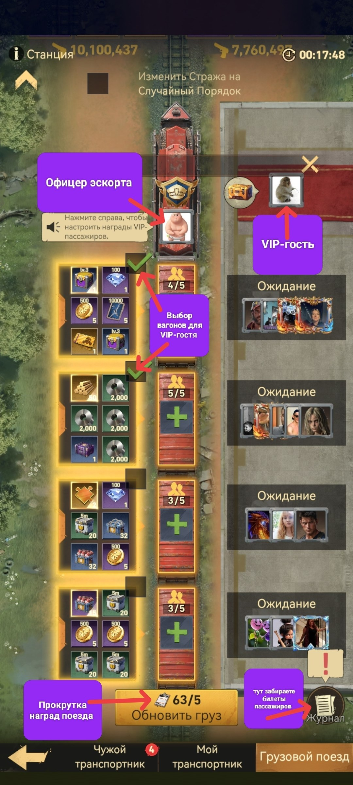

🚂 Поезд

🧭 Шаг 1 - нажмите на иконку рядом с кнопкой радара (см. стрелку), чтобы открыть меню транспорта

🧭 Шаг 2 - во вкладках внизу выберите «Грузовой поезд» (см. стрелку)

🚂 Станция поезда: «Офицер эскорта», «VIP-гость», выбор вагонов для VIP-гостя, «Обновить груз» - прокрутка наград и «Журнал» - забрать билеты пассажиров
🚂 Поезд Ежедневное событие. Руководство Альянса и все участники через опрос выбирают комфортное для большинства время запуска посадки пассажиров на Поезд и назначают игрока на роль охраны (офицера эскорта) данного поезда. Будет ли производиться посадка пассажиров через списки / свободно / с определёнными условиями - обдумывает и решает руководство вашего Альянса. 🎫 Вместимость и награды • Вместимость - 20 пассажиров, 4 вагона по 5 игроков. • Каждый пассажир получает все награды вагона, в который сел, по почте. • Пассажиры имеют 4 часа на посадку с момента назначения офицера эскорта. • Каждому пассажиру желательно отдавать по 3 билета, чтобы офицер эскорта мог накрутить лучшие награды для всех.
👑 VIP гость / пассажир Офицер эскорта отправляет личное приглашение игроку. VIP-гость может принять его в течение часа, после чего сообщает офицеру эскорта, какие 2 вагона наград он хочет, и с завершением поездки получает их по почте.
🛡️ Офицер эскорта Офицер эскорта назначается из игроков Альянса уровня R4–R5. В теории и логически выбирать игрока с самыми сильными отрядами по мощи, так как именно его отряды будут защищать ваш поезд от грабежей. Ему надо настроить отряды для защиты поезда (после запуска посадки пассажиров). Офицер эскорта должен как минимум 5 раз прокрутить награды в вагонах, чтобы поезд обновился до золотого - он получает все награды со всех вагонов. Из-за этого руководству Альянса надо продумать, кто и с какой частотой будет назначаться на эту роль, так как награды со всех вагонов = ускорение развития определённого игрока. Также офицер эскорта должен узнать, какие вагоны с наградами хочет VIP-гость, и поставить галочки возле нужных.